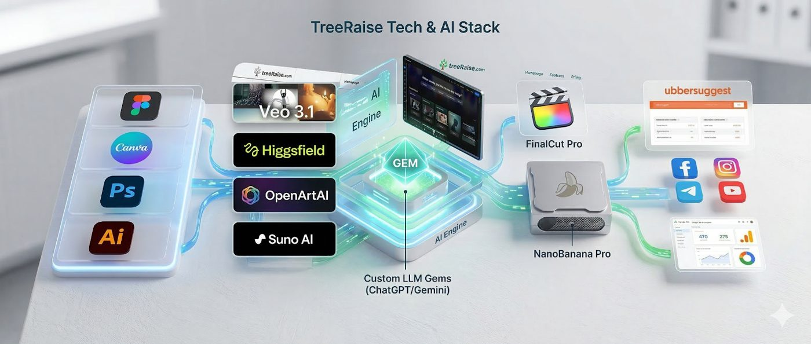
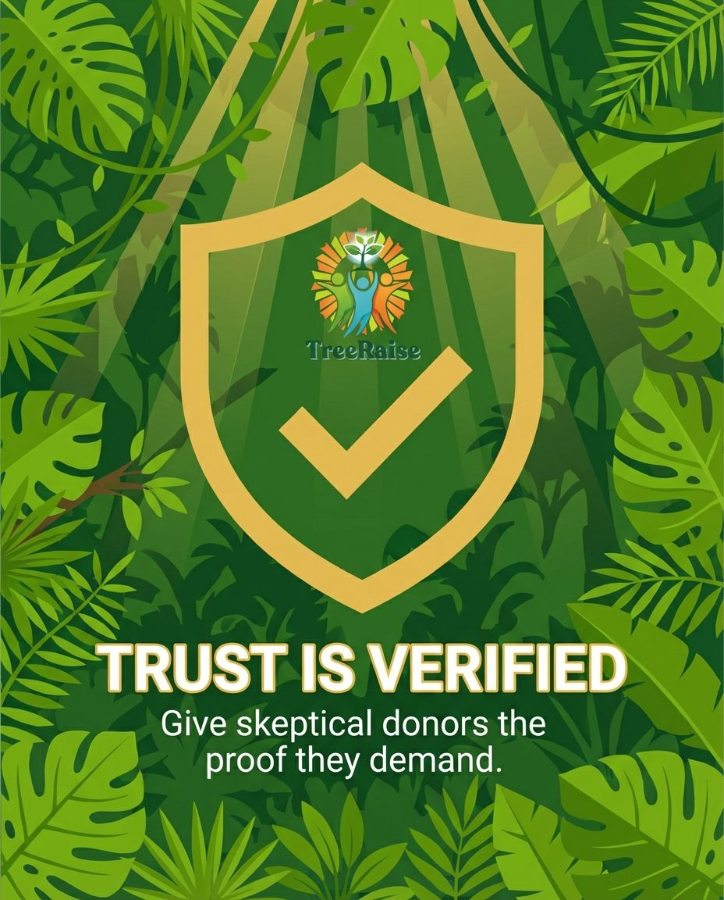
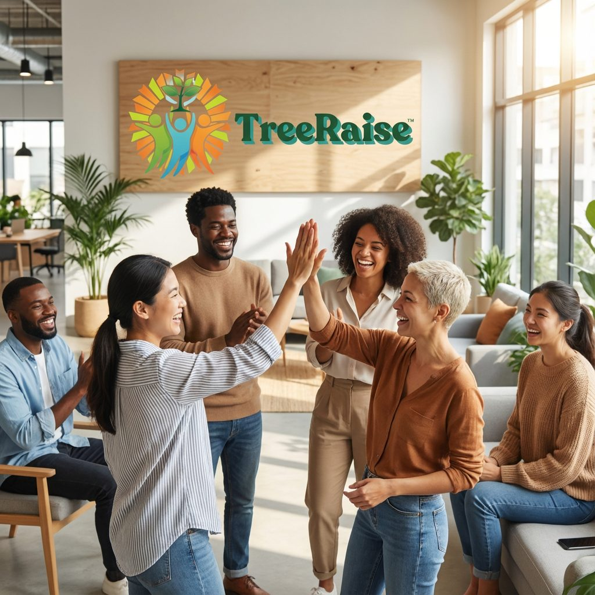
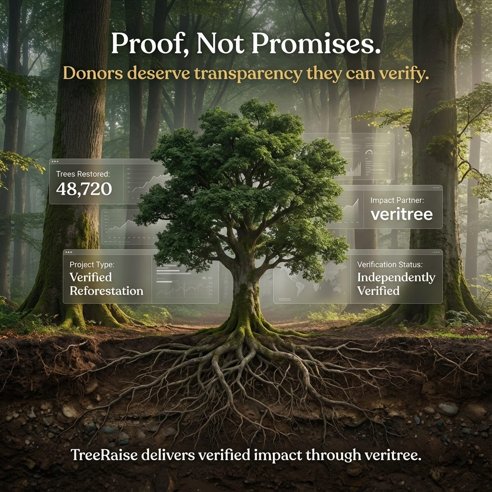

Brand · Identity · Web TreeRaise
The Platform Built from the Ground Up
Architecting TreeRaise: From Vision to Fundraising Ecosystem

Genre: Platform Architecture · Brand Strategy · Behavioral Marketing · Educational Content
Wayne Elsey brought the vision. My role was to build everything else: from a blank Figma canvas to a fully operational brand ecosystem. This was not a design project. It was the end-to-end creation of a fundraising platform built on behavioral psychology, AI-powered content systems, and massive-scale creative production.
Deliverables At A Glance
- End-to-end UX/UI Platform Design (Figma)
- Comprehensive Brand Identity (Color, Typography, Voice)
- Custom AI "Gems" for Scalable Brand Consistency
- Original Educational Curriculum & Workbooks
- "Ory the Mascot" Video Series & Storybooks
- Go-to-Market Strategy, Social Hooks, & Blog Infrastructure
The Challenge
- Translate a powerful philanthropic vision into a fully functional, market-ready ecosystem. This required executing on:
- Ground-up UX/UI and visual identity, starting from absolute zero.
- Deep data research to drive an overarching behavioral marketing design.
- Establishing unbreakable brand consistency across a massive volume of distinct assets.
- Creating an engaging educational and narrative experience for users of all ages.
How I Built It
The foundation started in Figma. I led the early research, established the core messaging, and locked in the exact fonts, colors, and visual language that would define the platform.

To ensure that every piece of content moving forward felt completely unified, I engineered custom AI Gems. These modular prompt systems became the guardrails for the brand, allowing for the rapid scaling of perfectly aligned messaging, design outputs, and social media hooks without ever losing the core voice.
Beyond the technical and visual architecture, I wrote the comprehensive copy for the entire site, including the ongoing blog content. The underlying strategy relied heavily on behavioral marketing design, understanding exactly how to guide users through the fundraising journey intuitively, ensuring that the design actively prompted the desired actions.
The Experience
TreeRaise needed to be more than just a functional software platform; it needed a soul. That came to life through a multi-tiered, highly structured content strategy:
Ory the Mascot: Produced a series of engaging videos featuring Ory to guide, educate, and entertain users throughout the platform.
The Educational Ecosystem: Developed complete workbooks and a structured curriculum to actively support the fundraising efforts of schools.
Narrative World-Building: Wrote and designed original storybooks to deepen the emotional connection with the platform's mission.

Go-to-Market Assets: Crafted the strong hooks and social media campaigns needed to launch the brand and sustain its momentum.
What I Learned
When you build a platform from the ground up, the lines between UX, copywriting, and behavioral psychology disappear. They become interconnected levers: pull one, the others move. AI Gems aren't a workflow shortcut. They're a requirement for maintaining creative control when scaling a brand across hundreds of touchpoints.

Why It Matters
TreeRaise proves what's possible when strategy and execution aren't separated. A lean team can produce enterprise-level volume (without sacrificing consistency, quality, or brand integrity) when the right systems are built from day one.
The Bigger Picture
Great ideas require rigorous execution. Vision sets the destination, but the architectural build, the behavioral triggers, the design systems, and the narrative assets pave the road. TreeRaise is proof of what happens when high-level strategy meets comprehensive, end-to-end creative production
The Tech & AI Stack
Figma, NanoBanana Pro, VEO3.1, Custom LLM Gems (ChatGPT/Gemini), Canva, Photoshop, Illustrator, Higgsfield, OpenArtAI, Suno AI, FinalCut Pro, ubbersuggest, Social Platforms, Google Ads & Analytics.
In motion
End-to-end brand ecosystem architected from a blank canvas: UX/UI, identity, and content systems
Custom AI Gems driving brand consistency across hundreds of touchpoints
Behavioral marketing across the full customer journey, reducing friction and lifting donor conversion
Go-to-market launch infrastructure that brought in leads on day one
Want this kind of work on your brand?
If your brand should be working harder than it is, this is where it starts. One direct conversation.